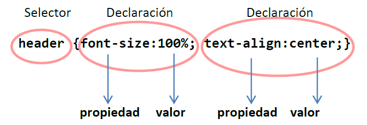

Primero hay que indicar el tipo de caracteres que se van utilizar. Se
puede hacer con @charset en la primera línea del documento
CSS, pero lo recomentado es utilizar una etiqueta meta en la
cabecera de la página.
Regla de estilo

Estructura de regla de estilo
Las reglas o instrucciones de estilo están formadas por un selector
y un bloque de declaraciones.
El selector determina el elemento HTML sobre el que se quiere
aplicar una determinada regla de estilo. El bloque de declaraciones
define las reglas de estilo, va entre llaves de apertura y cierre
“{}”, e incluye la propiedad CSS y su correspondiente valor.
Selectores básicos
Selector de tipo o nombre de elemento
Permite aplicar un determinado estilo a todos los elementos del
tipo seleccionado, con independencia de posibles clases e
identificadores. Para poder afinar más la selección se deben
utilizar otros criterios de selección.
Referencias de clase
A un grupo de elementos HTML le añadimos el atributo class;
después, en la hoja de estilos, la llamamos con un punto seguido
del nombre.
Referencias de ID
Se asigna a una etiqueta concreta mediante el atributo id;
después, en la hoja de estilos, se llama utilizando el símbolo
almohadilla seguido del nombre. Un ID es un identificador único,
no se puede repetir entre etiquetas.
Pseudoclases
Las pseudoclases permiten crear referencias a un elemento mediante
información concreta, como una acción ("hover") o una posición
("last-child"). Para usarlos, en la hoja de estilos se coloca la
clase, ID o elemento seguido de ":" y la pseudoclase.
Las pseudo-clases de tipo child permiten hacer referencia
a un elemento hijo de una serie que ocupa el lugar o número de
orden indicado en la propia instrucción, mientras que las
pseudo-clases definidas para la directiva a permiten
clasificar los hipervínculos.
Pseudoclases tipo child
:nth-child()
Entre paréntesis se especifica la posición del elemento,
empezando desde el primero
:first-child
Primer elemento
:last-child
Último elemento
:nth-last-child()
Entre paréntesis se especifica la posición del elemento,
empezando desde el último
Pseudoclases para a
:visited
Vínculo visistado
:hover
Vínculo donde está el ratón
:link
Vínculo no visitado
:focus
Vínculo seleccionado por teclado
:active
Vínculo que recibe el clic
Pseudoelementos
Los pseudo-elementos son una parte de algún elemento HTML que,
aunque no tienen identidad propia, pueden ser identificados por
las reglas de estilo y ser formateados de manera distinta a los
elementos a los que pertenecen. Se añaden utilizando el nombre del
elemento seguido de "::" y el nombre del pseudoelemento.
Pseudoelementos más usados
::after
Insertar algo después del elemento
::before
Insertar algo antes del elemento
::first-letter
Primera letra del elemento
:first-line
Primera línea del elemento
::selection
Una porción seleccionada por el elemento
Selector universal
Se utiliza el asterisco (*) como selector. Si se usa solo implica
a todos los elementos de la página, aunque también se puede
escribir después de un elemento contenedor concreto para
especificar todos sus subelementos.
Criterios de selección
Selector descendiente
Ascendiente es el elemento que contiene al que se desea formatear,
que es descendiente. Existe un selector que relaciona todos los
elementos que son descendientes de un elemento específico. Para
seleccionar elementos en función del ascendiente, se usan dos
selectores separados por un espacio, siendo el primero de ellos el
ascendiente y el segundo el descendiente.
Selector de hijos
Padre es el elemento que contiene directamente al que se desea
formatear, al que llamamos hijo. Para seleccionar elementos en
función del padre se usan dos selectores separados por el símbolo
“mayor que” (>), siendo el primero el padre y el segundo el hijo.
Hermanos adyacentes
Los hermanos adyacentes son elementos que se sitúan de forma que
uno precede inmediatamente al otro, perteneciendo ambos al mismo
elemento padre. Para seleccionar elementos en función de hermanos
adyacentes, se usan dos selectores separados por el símbolo suma
(+). El primero de los selectores representa el hermano precedente
y el segundo el hermano al cual se quiere dar formato.
Hermanos generales
Los hermanos en general son elementos que comparten el mismo
elemento padre. Para indicar un selector en función de hermanos en
general se usan dos selectores separados por el símbolo tilde (~),
siendo el primero el elemento que precede (no necesariamente de
manera inmediata) al segundo selector, que es al que se quiere dar
formato.
Selector por atributo o valor de elemento
Se utiliza cuando se pretende aplicar estilo a elementos que
tienen un determinado atributo o valor de atributo dado. La forma
de declararlo es elemento[atributo].
Atributo o valor
[attr=valor]
Elementos cuyo atributo "attr" tenga exactamente el valor
"valor"
[attr~=valor]
Elementos cuyo atributo "attr" tenga por valor una lista de
palabras separadas por espacios en blanco, una de las cuales
es “valor”
[attr|=valor]
Elementos cuyo atributo "attr" tenga exáctamente el valor
“valor”, o que comienzan con “valor” inmediatamente seguido
de un guión
[att^=valor]
Elementos con el atributo "attr" cuyo valor comienza
exactamente por la cadena e texto “valor”
[att$=valor]
Elementos con el atributo "attr" cuyo valor finaliza con la
cadena de texto “valor”
[att*=valor]
Selecciona elementos con el atributo "attr" cuyo valor
contiene en él al menos una vez la subcadena “valor”
Unión y combinación de selectores
Todas las técnicas que hemos visto anteriormente se pueden
combinar entre sí para dar una mayor especificidad a la selección.
Clase/ID + elemento
Esta es una forma de selección muy utilizada y de gran precisión
que se emplea para dar formato y estilo solo a aquellos elementos
que se hayan etiquetado con una clase o con un identificador
concreto. Para ello se escribirá el nombre del elemento seguido de
un separador (el punto para las clases y la almohadilla para los
identificadores), y detrás el nombre de la clase o del
identificador correspondiente.
Unión
Cuando sea necesario aplicar las mismas reglas de estilo a varios
elementos, se pueden reutilizar declaraciones, agrupando
selectores, en lugar de repetir las mismas reglas de estilo con
diferentes selectores. Para ello se separan los selectores con una
coma.
Combinación
Para combinar estas técnicas, se deben respetar las normas de
escritura ya mencionadas (comas, almohadillas, puntos, corchetes,
espacios, etc.). Si se quiere ser muy específico, se pueden
juntar; si se quiere añadir los mismos estilos a varios puntos,
ser más genérico o usar las comas.
Etiquetas "div" y "span"
Los elementos de HTML span y div, junto con los
atributos class e id, permiten seleccionar o agrupar
elementos de un documento HTML y así precisar a qué elementos se
quieren asignar las reglas de estilo CSS. Ambos son elementos que
implican ningún cambio de estilo por sí mismos. Tampoco añaden
contenido al HTML, sino que sirven para ayudar a organizar su
estructura y servir como selectores en reglas CSS.
Span sirve para crear un gancho en un texto, mientras que
div se utiliza para crear cajas (divisiones) dentro de otros
contenedores (etiquetas).